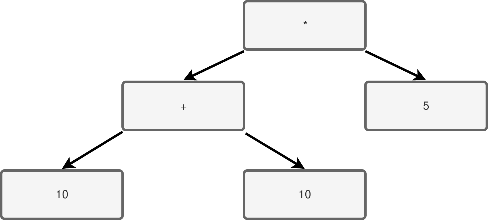

Entendendo como uma linguagem de programação é construída

O que é uma linguagem ?
O que é uma linguagem de programação ?
O que é a implementação de uma linguagem de programação ?
- Matz's Ruby Interpreter/CRuby
- JRuby
- mruby
- Rubinius
Implementações de Ruby
- GNU C Compiler/GCC
- Clang
Implementações de C
Linguagem x Implementação
Tipos de Implementação
- Interpretador
- Compilador Ahead of Time
- Compilador Just in Time
Fases de um compilador
Analisador Léxico
O que é um analisador léxico?
Exemplo de Input:
def my_method(arg)
puts "123" + 4
end
[
TK_DEF, TK_IDENTIFIER, TK_OPENPAR, TK_IDENTIFIER, TK_CLOSEPAR, TK_NEWLINE
TK_IDENTIFIER, TK_STRING, TK_PLUS, TK_INT, TK_NEWLINE,
TK_END, TK_NEWLINE
]
Analisador Sintático
O que é um analisador sintático?
"hello world" def my_method(arg)
puts "Hello World"
end
"hello world"
def my_method(arg)
puts "Hello World"
end
Definição de Gramática
Backus-Naur Form
<toplevel> ::= <statement_list>
<statement_list> ::= <statement> | <statement> TK_NEWLINE <statement>
<statement> ::= <expression> | <method_call>
<method_call> ::= TK_IDENTIFIER TK_OPENPAR <expression> TK_CLOSEPAR
<expression> ::= <expression> <bin_operator> <expression>
<literal> ::= TK_IDENTIFIER | TK_NUMBER
<bin_operator> ::= TK_PLUS
Abstract Syntax Tree
Ferramentas de Auxílio
- Lexers: Lex(Flex)
- Parsers: Yacc(Bison)
- Geração de Código: LLVM / LibJIT
Gerador de Código
Como começar aprender mais sobre compiladores ?
- Kaleidoscope
- mruby
- Lua
Códigos de Exemplo
- Dragonbook
- Ruby Under a Microscope